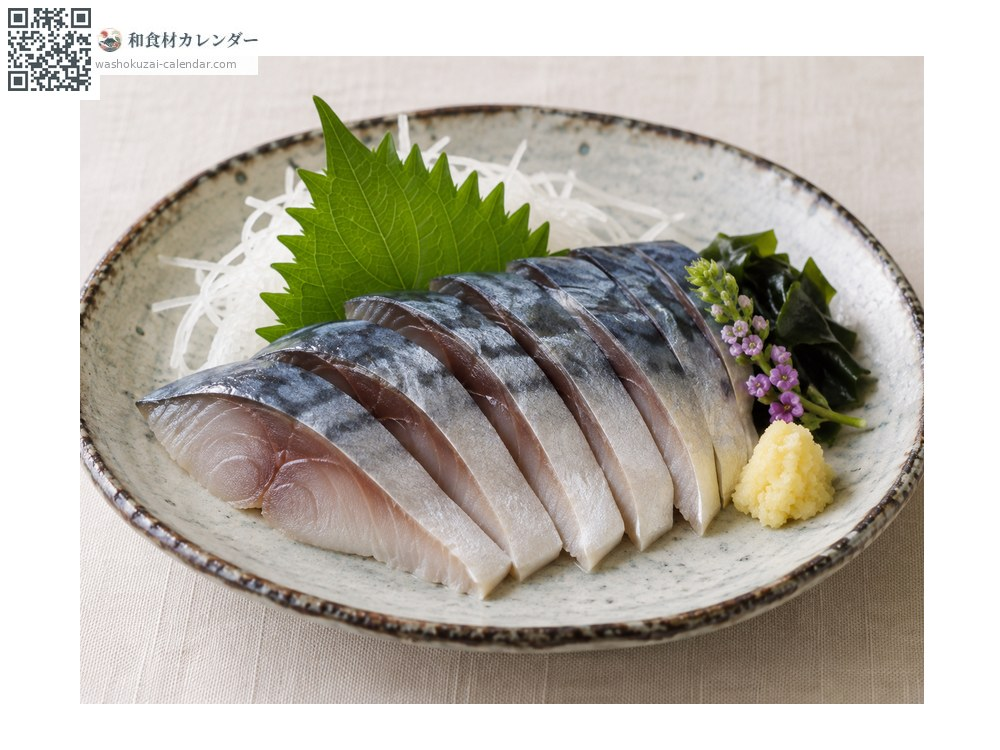
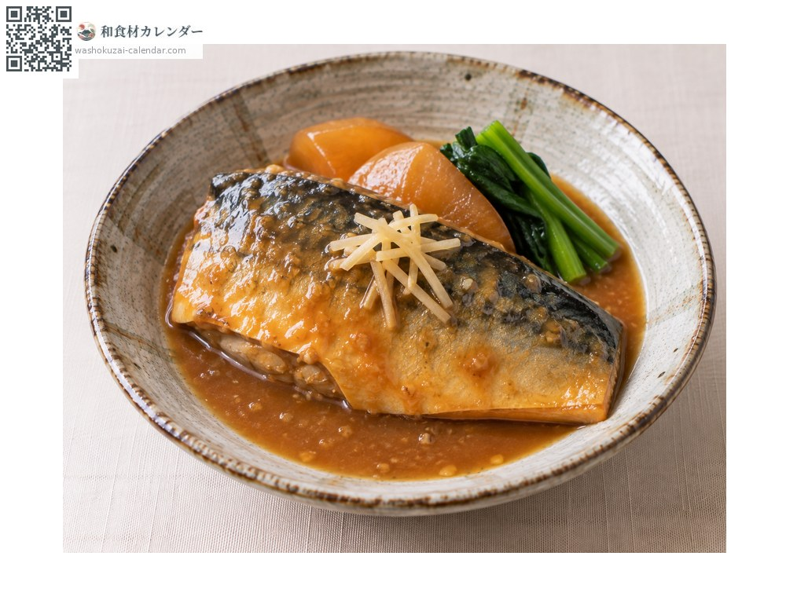
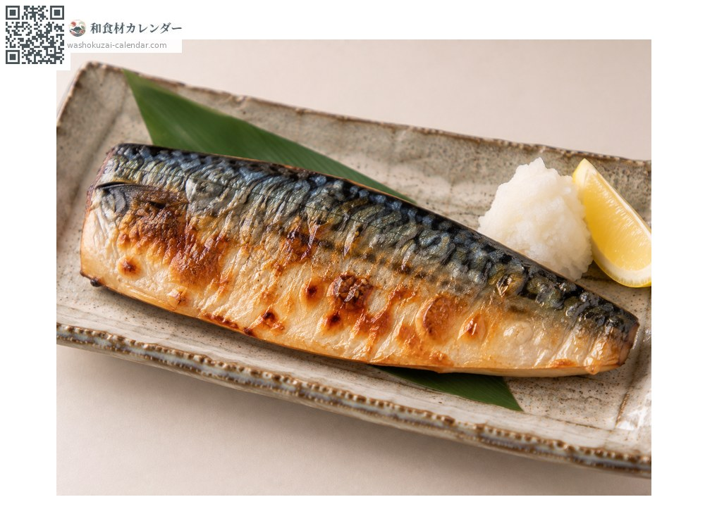
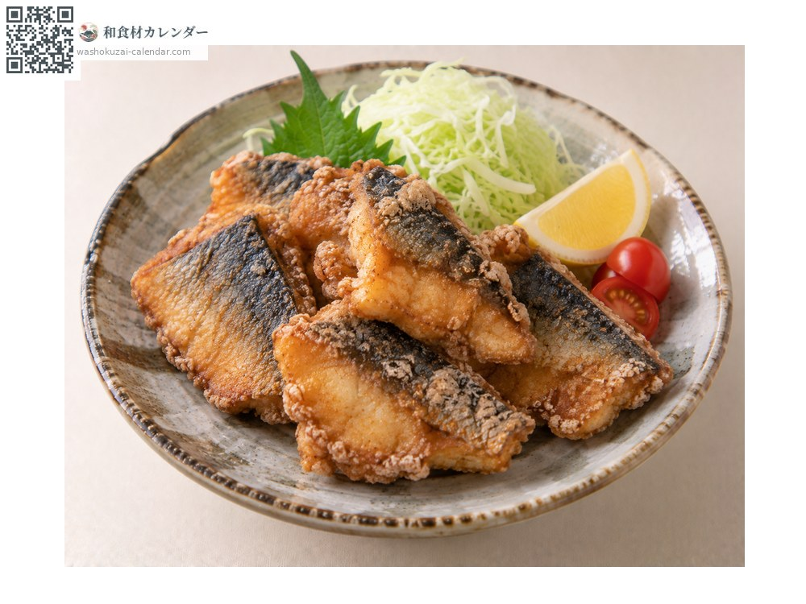

海鲜
鲭鱼
マサバ まさば masaba
别名masaba、saba
应季时期为1月、10月、11月、12月

应季时期
1月
2月
3月
4月
5月
6月
7月
8月
9月
10月
11月
12月
应季有供应
烹饪方法

醋渍鲭鱼
先盐渍再醋渍。若要生食，建议先冷冻一次较安全。

味噌姜汁炖煮
加姜甜咸炖煮，是经典的家常菜。

盐烤
搭配白萝卜泥。

龙田扬（酱油腌后裹粉炸）
先腌过再炸，腥味会减轻。
挑选方法
背部花纹清晰、腹部银白发亮。鱼肉紧实，体型圆润代表油脂丰厚。
保存方法
特别容易失去鲜度，当天处理。要生食请先冷冻一次。
主要产地
小知识
秋冬油脂丰厚，称为「秋鲭」「寒鲭」。关サバ、松轮サバ等品牌鱼也很多。